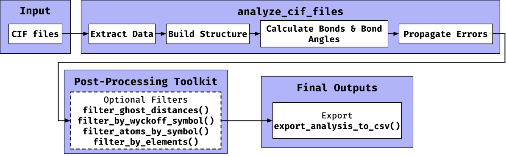
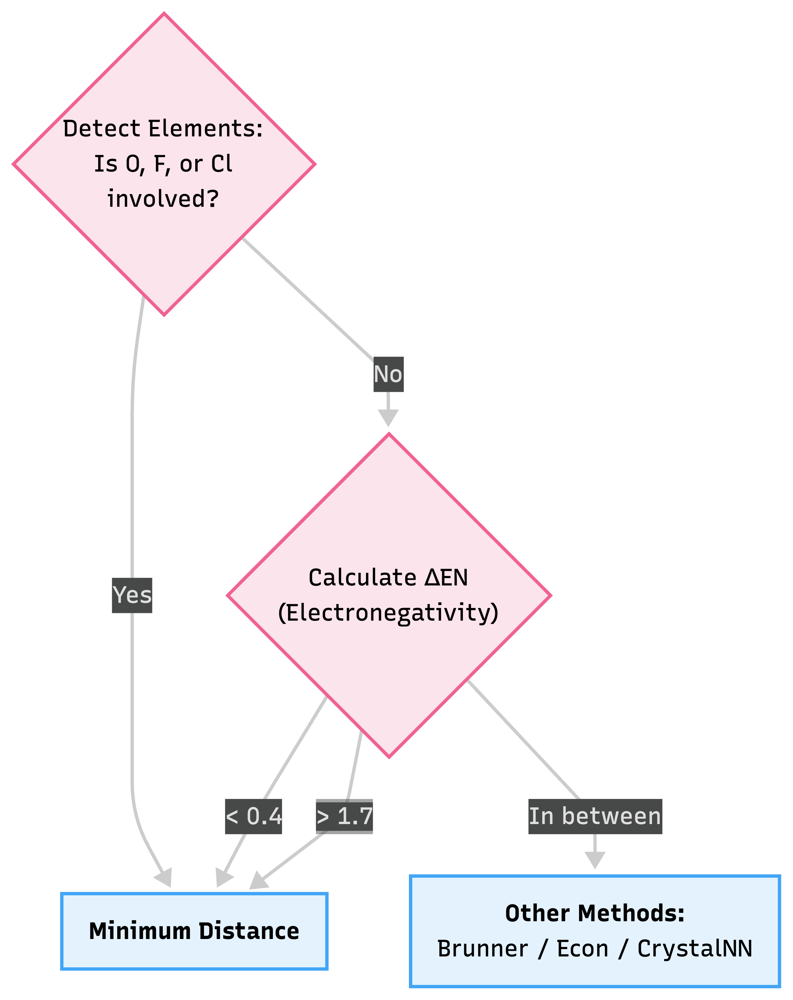
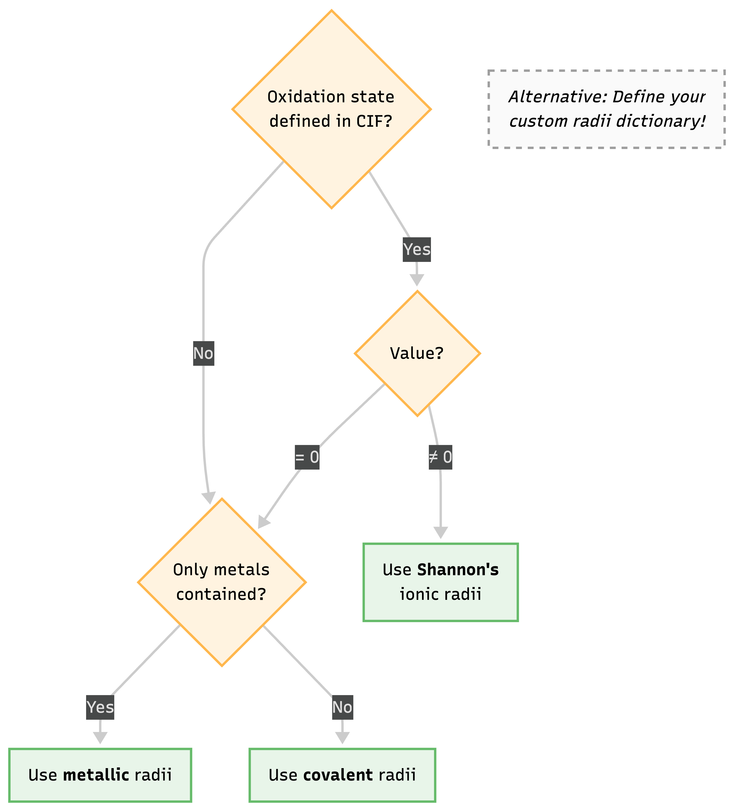

crystract provides a suite of functions to parse Crystallographic Information Files (.cif), extracting essential data such as chemical formulas, unit cell parameters, atomic coordinates, and symmetry operations. It also includes tools to calculate interatomic distances, identify bonded pairs using various algorithms (Minimum Distance, Brunner’s, Hoppe’s, Voronoi, CrystalNN), determine nearest neighbor counts, and calculate bond angles. All data is extracted into nested data.tables, which can then be exported as an R Data Structure (RDS) or folders of .csv files. The package is designed to facilitate the preparation of crystallographic data for further analysis, including machine learning applications in materials science.
Note on Repository Structure
The
crystractpackage is located within thepackages/crystract/subdirectory of thePrabhuLab/ml-crystalsGitHub repository. You must use thesubdirargument during installation, as shown below.
Key Features
-
Efficient CIF Parsing: Utilizes
data.tablefor fast and robust extraction of metadata, unit cell parameters, atomic coordinates, and symmetry operations. - Symmetry and Supercell Generation: Applies symmetry operations to generate a full unit cell from the asymmetric unit and expands coordinates into a 3x3x3 supercell for neighbor searching.
- Geometric Calculations: Computes interatomic distances using the metric tensor (correct for all crystal systems) and calculates bond angles.
-
Multiple Bonding Algorithms: Implements several algorithms to identify bonded atoms, including the
minimum_distance(default),brunner,econ(Hoppe’s),voronoi, andcrystal_nnmethods. - Rigorous Error Propagation: Calculates and propagates experimental uncertainties from the CIF file into the final calculated bond lengths and angles.
- Powerful Post-Processing Tools: Includes functions to filter results by chemical element, Wyckoff site, or to remove non-physical “ghost” distances caused by site disorder using a customizable atomic radii table.
-
Batch Processing & Export: The main
analyze_cif_files()function is designed to process hundreds of files in a single run, and results can be easily exported to a structured directory of CSV files withexport_analysis_to_csv().
Workflow Overview
The following diagram illustrates the primary data pipeline in crystract, from raw CIF input to final CSV export.

Best Practices & Decision Logic
To assist researchers in configuring crystract for their specific datasets, we provide the following decision trees for selecting atomic radii and choosing the most appropriate bonding algorithm.
1. Choosing a Bonding Algorithm
When invoking analyze_cif_files(..., bonding_algorithms = c(...)), we recommend choosing your target algorithm based on the chemical makeup of your structure and the electronegativity differences () of the expected bonds.

2. Atomic Radii Selection
When utilizing functions like filter_ghost_distances() or algorithms that rely on distance cutoffs, crystract employs an internal logic to select the most appropriate atomic radius. You can also override this by injecting your own custom radii dictionary via set_radii_data().

Quickstart: A Complete Workflow & Real Outputs
The analyze_single_cif() (and its batch counterpart analyze_cif_files()) provides a complete, one-step workflow. Here we run it on an example crystal structure included inside the package itself, demonstrating the exact data outputs you can expect.
library(crystract)
library(data.table)
# 1. Load the built-in demo CIF file (Strontium Silicide)
cif_path <- system.file("extdata", "1590946.cif", package = "crystract")
# 2. Analyze the file
# This single function handles parsing, supercell expansion, geometric calculations,
# bonding detection, and error propagation.
analysis_results <- analyze_single_cif(
cif_path,
bonding_algorithms = c("minimum_distance", "crystal_nn")
)1. Extracted Metadata
The returned object is a single row data.table containing both high-level metadata and list-columns storing the detailed extracted measurements.
| database_code | chemical_formula | space_group_name |
|---|---|---|
| depnum_ccdc_archive CCDC 1590946 | Si1 Sr2 | P n m a |
High-Level Crystal Information
2. Unit Cell Metrics
The parameters defining the size and shape of the unit cell are securely parsed along with their experimental uncertainties (if available in the CIF).
| _cell_length_a | _cell_length_b | _cell_length_c | _cell_angle_alpha | _cell_angle_beta | _cell_angle_gamma |
|---|---|---|---|---|---|
| 8.11 | 5.15 | 9.54 | 90 | 90 | 90 |
Extracted Unit Cell Parameters (Å and Degrees)
3. Detected Bonded Pairs
crystract identifies bonded pairs using your chosen algorithms. Below is the output from the Minimum Distance algorithm. Notice the rigorous propagation of experimental error (DistanceError).
| Atom1 | Atom2 | Distance | DistanceError | Weight |
|---|---|---|---|---|
| Si1 | Sr1_1_0_0_0 | 3.163544 | 0 | 1.0000000 |
| Si1 | Sr1_2_0_0_0 | 3.245310 | 0 | 0.9748050 |
| Si1 | Sr1_4_0_-1_-1 | 3.184477 | 0 | 0.9934267 |
| Si1 | Sr1_4_0_0_-1 | 3.184477 | 0 | 0.9934267 |
| Si1 | Sr2_1_0_0_-1 | 3.261366 | 0 | 0.9700058 |
| Si1 | Sr2_3_-1_-1_0 | 3.465249 | 0 | 0.9129342 |
Predicted Bonded Pairs (Minimum Distance Method)
4. Calculated Bond Angles
Using the metric tensor, all connected triplets are evaluated to calculate the exact internal bond angles across the repeating periodic boundaries.
| CentralAtom | Neighbor1 | Neighbor2 | Angle | AngleError |
|---|---|---|---|---|
| Si1 | Sr1_1_0_0_0 | Sr1_2_0_0_0 | 109.37260 | 0 |
| Si1 | Sr1_1_0_0_0 | Sr1_4_0_-1_-1 | 125.55190 | 0 |
| Si1 | Sr1_1_0_0_0 | Sr1_4_0_0_-1 | 125.55190 | 0 |
| Si1 | Sr1_1_0_0_0 | Sr2_1_0_0_-1 | 129.28796 | 0 |
| Si1 | Sr1_1_0_0_0 | Sr2_3_-1_-1_0 | 69.08689 | 0 |
| Si1 | Sr1_1_0_0_0 | Sr2_3_-1_0_0 | 69.08689 | 0 |
Calculated Interatomic Angles
Data Dictionary
Here is a comprehensive overview of the columns generated in the Master Analysis Object and its nested tables.
1. Master Analysis Object
| Column Name | Data Type | Description |
|---|---|---|
file_name |
Character | The name of the processed CIF file. |
database_code |
Character | The unique identifier from the source database. |
chemical_formula |
Character | The chemical sum formula extracted from the CIF. |
structure_type |
Character | The name of the structure type. |
space_group_name |
Character | Hermann-Mauguin space group symbol. |
space_group_number |
Character | International Tables space group number. |
unit_cell_metrics |
List (DT) | Nested table containing lattice parameters. |
atomic_coordinates |
List (DT) | Nested table of primary asymmetric atoms. |
symmetry_operations |
List (DT) | Nested table of symmetry operators. |
transformed_coords |
List (DT) | Nested table of the full unit cell atoms. |
expanded_coords |
List (DT) | Nested table of the supercell (3x3x3) atoms. |
distances |
List (DT) | Nested table of all calculated interatomic distances. |
bonded_pairs_* |
List (DT) | Nested table of bonds detected via requested methods (e.g. _minimum_distance). |
neighbor_counts_* |
List (DT) | Nested table of coordination numbers for requested methods. |
bond_angles_* |
List (DT) | Nested table of calculated bond angles for requested methods. |
2. Atomic Coordinates (Nested)
| Column Name | Data Type | Description |
|---|---|---|
Label |
Character | Unique atom label (e.g., “Fe1”). |
WyckoffSymbol |
Character | The Wyckoff letter (e.g., “c”). |
WyckoffMultiplicity |
Numeric | The site multiplicity (e.g., 4). |
Occupancy |
Numeric | Site occupancy factor (0.0 to 1.0). |
x_a, y_b, z_c
|
Numeric | Fractional coordinates along axis . |
*_error |
Numeric | Standard uncertainties for coordinates. |
3. Bonded Pairs (Nested)
| Column Name | Data Type | Description |
|---|---|---|
Atom1 |
Character | Label of the central atom (from the asymmetric unit). |
Atom2 |
Character | Label of the neighbor atom (from the expanded supercell). |
Distance |
Numeric | Calculated Euclidean distance in Angstroms (Å). |
DistanceError |
Numeric | Propagated standard uncertainty of the distance. |
DeltaX, DeltaY, DeltaZ
|
Numeric | Difference in fractional coordinates (). |
Weight |
Numeric | Calculated bond weight/strength depending on the algorithm. |
Licensing
crystract is offered under a dual-license model to accommodate a variety of use cases:
For Open-Source Projects: The package is licensed under the GNU General Public License v3.0 (GPL-3.0). If you are developing other open-source software, you are free to use, modify, and distribute
crystractunder the terms of the GPL-3.0.For Commercial Use: If you wish to use
crystractin a commercial product, for commercial services, or for any other commercial purpose, you must obtain a separate commercial license. Please contact the package maintainer to arrange the terms.
Installation
You can install crystract either from CRAN (recommended for most users) or directly from GitHub (for the latest development version).
Prerequisites
- Install the latest version of R from CRAN
- (Optional but recommended) Install RStudio Desktop IDE
Option 1: Install from CRAN (Stable Version)
If crystract is available on CRAN, this is the simplest and most stable method:
install.packages("crystract")Option 2: Install from GitHub (Latest Development Version)
To get the most recent updates and features:
# Install remotes if not already installed
install.packages("remotes")
# Install crystract from GitHub
remotes::install_github(
"PrabhuLab/ml-crystals",
subdir = "packages/crystract",
build_vignettes = TRUE
)Learning More
For a detailed, step-by-step guide explaining each function, the crystallographic principles, and the formulas used for calculations, please see the package vignette.
You can access it with the following command after you have successfully installed the package:
# This command opens the detailed package guide
vignette("crystract")Community Guidelines
We welcome and appreciate all forms of community engagement. To ensure a smooth and productive collaboration, we have established guidelines for contributing, reporting issues, and seeking support.
All participants in this project are expected to abide by our Code of Conduct. Please read it to understand the standards of behavior we expect.
For detailed instructions on how to contribute to the software, report bugs, or suggest new features, please review our Contributing Guidelines.